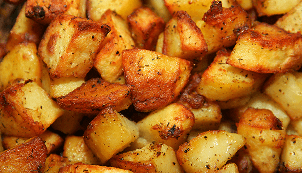

Oven Roasted Potatoes

Dreaming of crispy, golden oven roasted potatoes, just like Nonna makes? Now you can eat them in your very own home!
Ingredients:
- 2 tablespoons of salt
- Rosemary stalks
- Garlic
- Extra virgin olive oil
- 6 large potatoes
- Salt
Utensils:
- 2 x large bowls (one filled with water)
- 1 x large oven-safe tray
- Sharp knife
- Chopping board
Steps:
- To make the roasted potatoes, peel the skin off and cut them into your preferred size, placing them in the bowl of water once cut. Then, rinse and drain the potatoes once again and put them into a clean bowl.
- Sprinkle a few pinches of fine salt over the potatoes, rubbing it over them really well, mixing it through using your hands.
- Transfer the potatoes into an oven safe baking tray and spread them out, before adding a few short rosemary stalks and garlic cloves (with the skin still on, making a small slit with a knife).
- Braise the roasted potatoes at a medium heat on the stove top, mixing and turning them with a fork every so often, for up to 15 minutes.
- Place the braised potatoes in the oven to cook for up to 30 minutes or until they are crispy and golden.
- Once the roasted potatoes are cooked, remove them from the oven.
How to serve:
Enjoy these crispy oven roasted potatoes as a side dish with your favourite protein.